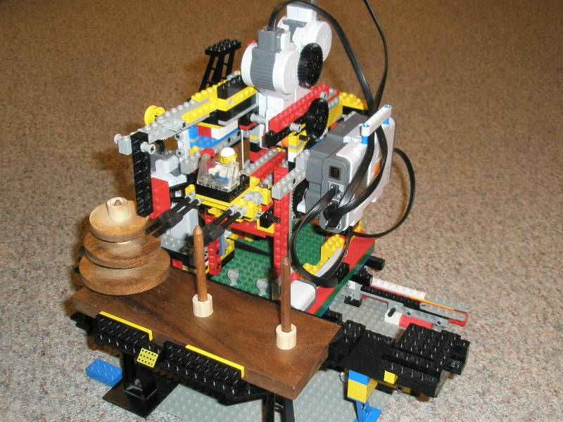
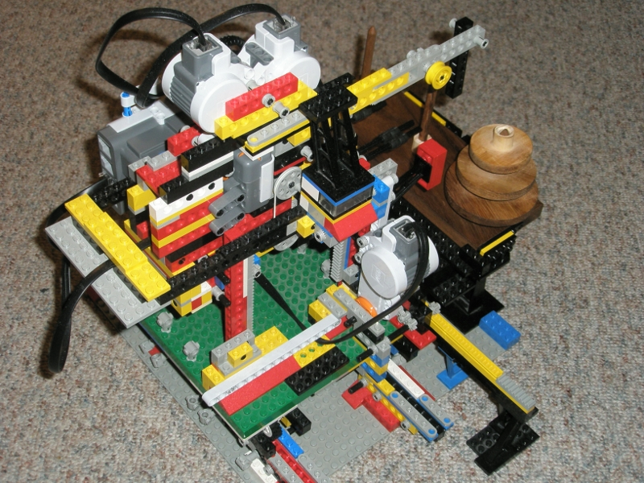

e-mail addresses: forename.surname@stud.sbg.ac.at
The project goal is building a Lego Mindstorms robot capable of solving the puzzle "Tower of Hanoi".
The Tower of Hanoi is a stack of different-sized disks. There are three rods. In the beginning, the first rod contains all the disks. The largest disk lies on the bottom, the second largest one is directly above and so on, the smallest disk lies on top. The goal is to move the whole tower to the third rod. In each step, only the topmost disk of one rod can be moved onto the top of another rod's stack. Additionally, it is never allowed to pile a disk onto a smaller one.
Our apparatus has a fork to pick up the disks, it can be moved in three directions and relies on color and touch sensors to determine its position. Using the NXC language, we created a three-threaded control software with one thread for application logic, one for the actual robot control, and one for situational background music. The moves are determined by an iterative algorithm yielding each movement decision in constant time.
Report: lmhanoi.pdf
Presentation: lmhanoi_slides.pdf
Source code: lmhanoi_src.tar.gz
Demonstration video: lmhanoi-klaus-film.avi (~54 MB)
The pictures below give an impression of our construct.

